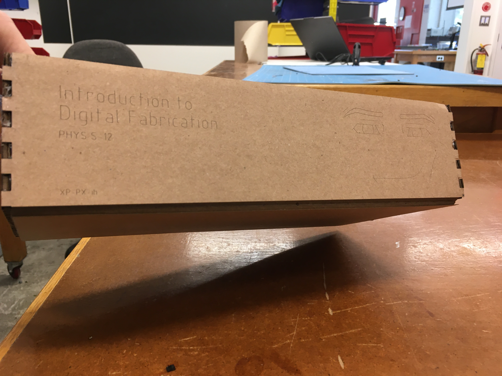
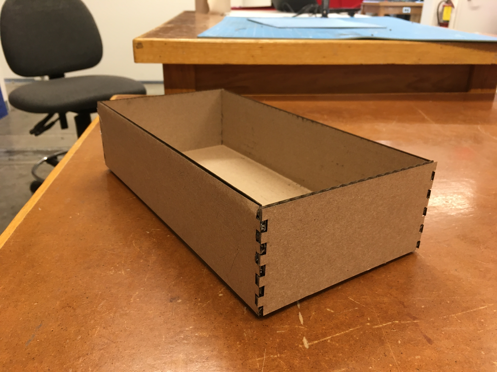
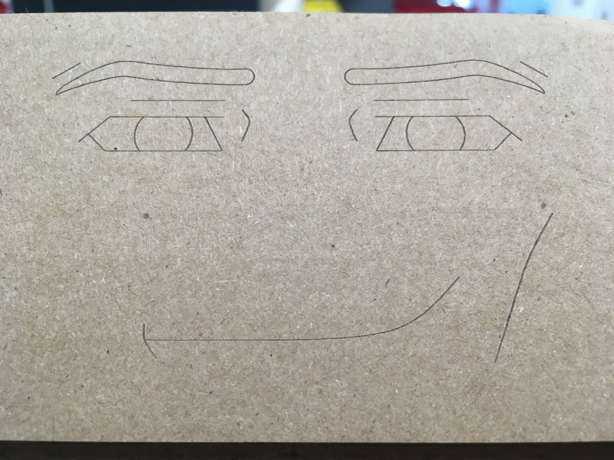

Assignments
Useless Cardboard Box
Useless Cardboard Box
Once again in Fusion360, we began work on modeling a useless cardboard box. [Include a video example]. We started with a provided model from Nathan. We then put in sketches using center rectangles, midpoint constraints, and guidelines (construction lines) and turned them into holes using the extrude tool.
.png)
We then unfolded the box in Fusion and learned how to project it to the sketch, allowing us to see the "shadows" of the 3D objects on the 2D plane. We then exported the projected sketch as a .DXF file so that we can send it to the laser cutter.

Cardboard Container
We started work on Fusion360. I learned how to create a sketch and use the rectangle, circle, line, select, offset, mirror, and rectangular pattern tools. I also managed to somehow reverse my zoom in and zoom out which is quite annoying. I deleted my original file of the box as it was massive, though in hindsight I realize I could have simply adjusted the parameters. For my new design, I decided that I should make my box into a house for no particular reason. Then I found out it's too big. I then decided to opt for a simple box but with engravings to customize it. I spent 40 minutes adding engravings. At least 20 of those minutes were spent making the Roblox Man Face.
.png)
.png)
The engravings were lighter than I expected, so I'll have to increase line width next time. Otherwise, everything printed well without any fires. I had to hot glue the corners though because it did not hold itself together for more than half a second.
  
Modeling Household/Lab Objects
Before trying to model two objects, I watched a Fusion 360 tutorial.